and Frequencies!
SYDE 671 · Assignment 2 · James Xie
PART 2.3:
GAUSSIAN &
LAPLACIAN STACKS
Decompose an image into spatial frequency bands without reducing its resolution. Recombine those bands to inspect how an apple and an orange form an oraple.
The supplied images


Both supplied RGB images are 740 × 530 pixels. They are converted to float64 [0, 1] and processed at that resolution, without resizing or registration. Existing grain and small geometric differences remain. Every level of every image stack retains shape 530 × 740 × 3; the mask layers retain 530 × 740.
01 / Gaussian and Laplacian stacks
The Gaussian stack contains six progressively blurred images with nominal cumulative σ = 0, 2, 4, 8, 16, 32 pixels. G0 is the original. To move from a scale σ previous to σ target, I apply a Gaussian with incremental σ = √(σ target² − σ previous²), using Gaussian variance addition. Finite sampled kernels approximate this schedule. Kernels are normalized OpenCV Gaussian vectors, truncated at radius ceil(4σ incremental), and applied separably along x and y with symmetric boundaries.
Li = Gi − Gi+1, i = 0,…,4
L5 = G5
I = L0 + L1 + … + L5
No downsampling or upsampling is used. No built-in pyramid function is called. The final coarse residual is essential: dropping it would remove the image's broad intensity/color structure and prevent reconstruction. Adjacent differences keep positive and negative coefficients.
For display, signed bands use middle gray for zero, with a shared scale across apple, orange and final-oraple images at the same level. Scales vary between levels to make their different frequency content visible. The last residual is shown as an ordinary RGB image. Display PNGs are clipped and quantized; reconstruction uses raw float64 bands.
Apple: Gaussian stack


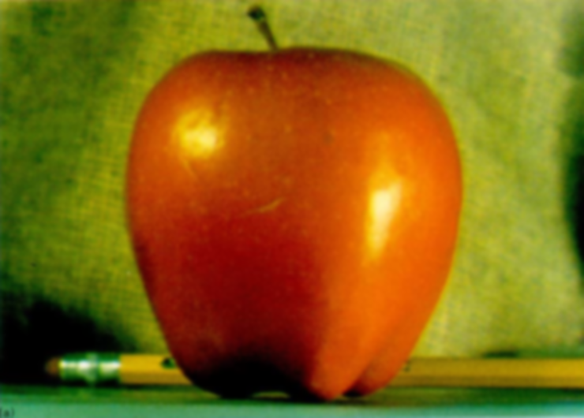


Apple: Laplacian stack

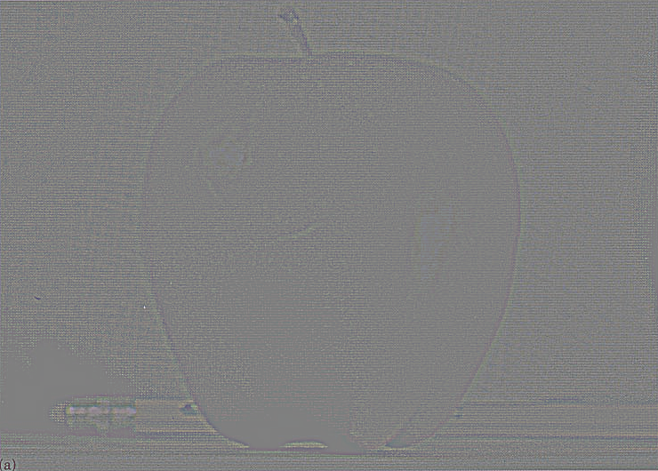

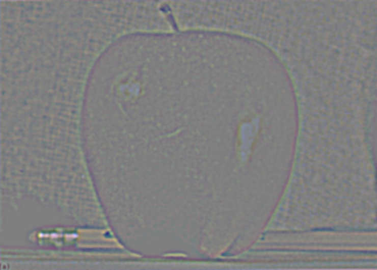

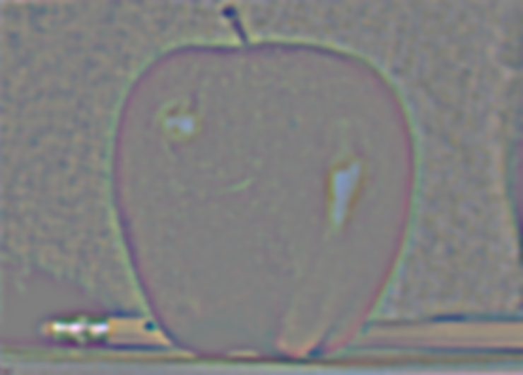

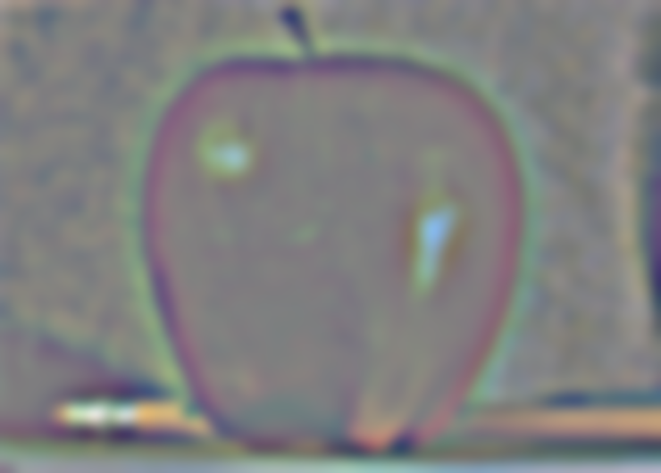

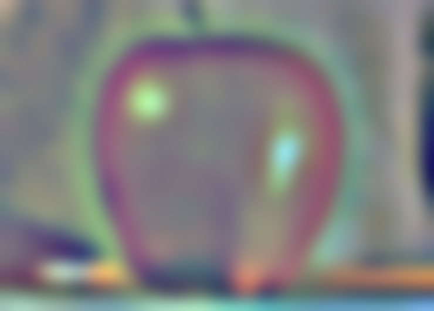

Orange: Gaussian stack


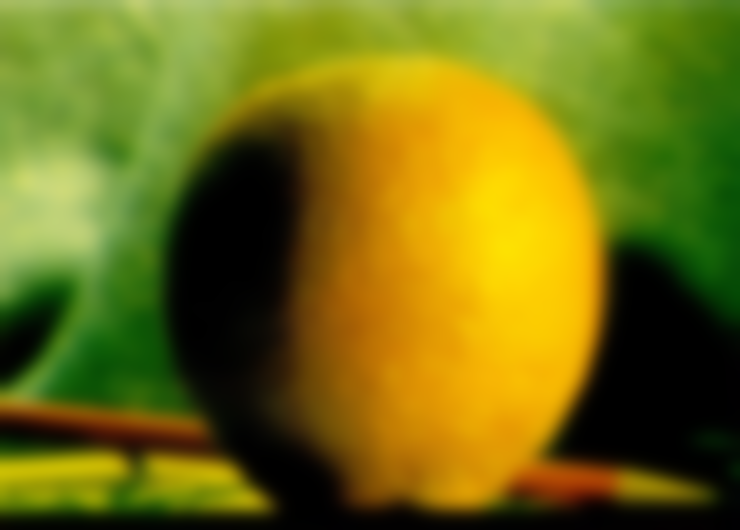


Orange: Laplacian stack

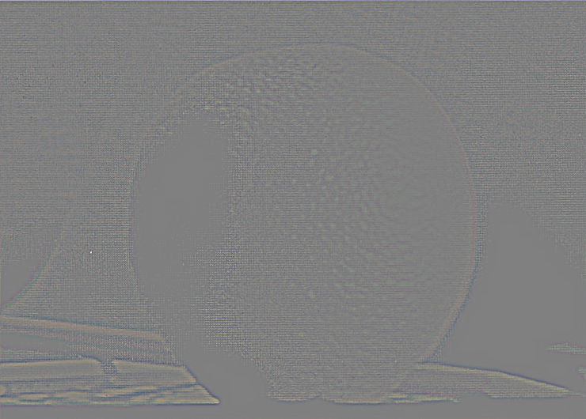

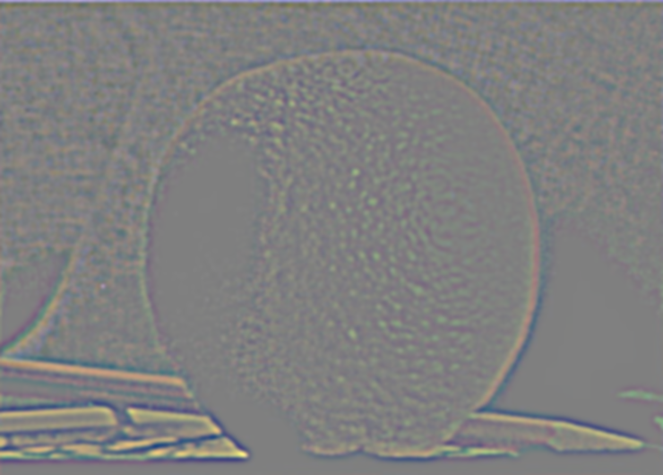

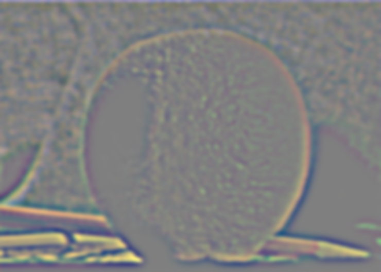

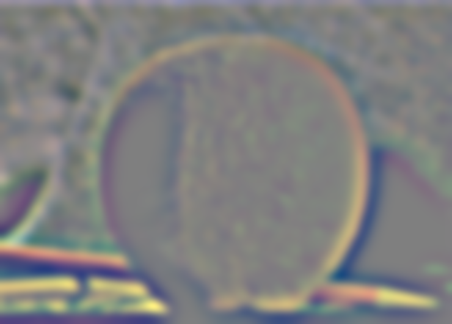

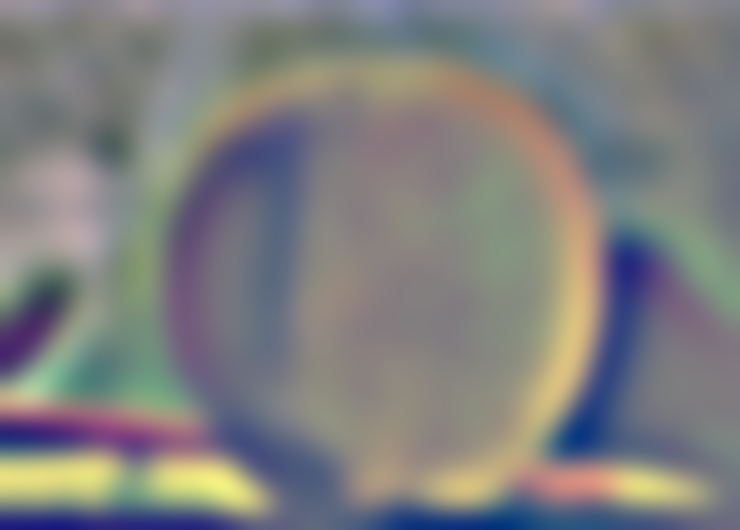

Final oraple: Gaussian stack


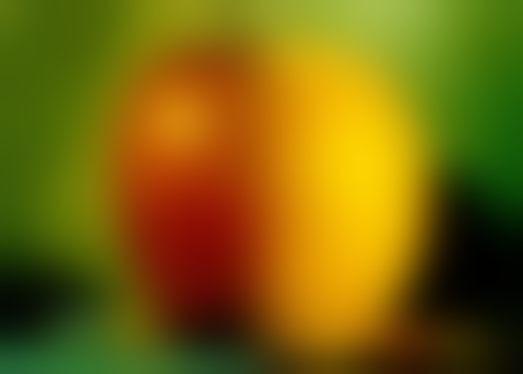
Final oraple: Laplacian stack

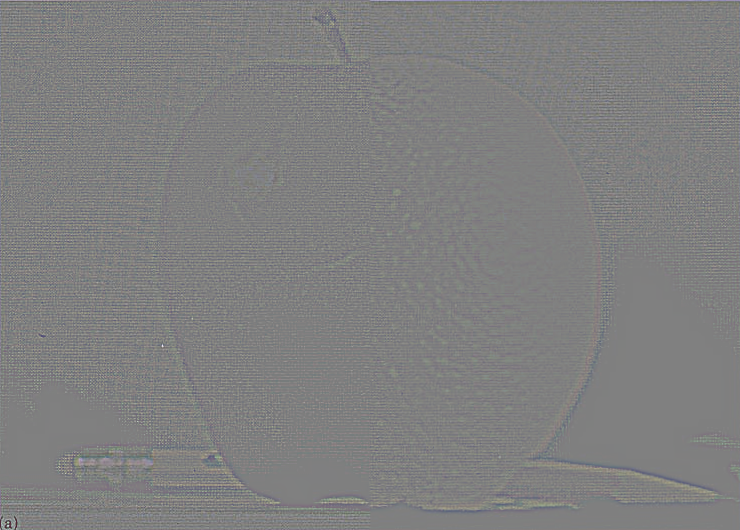

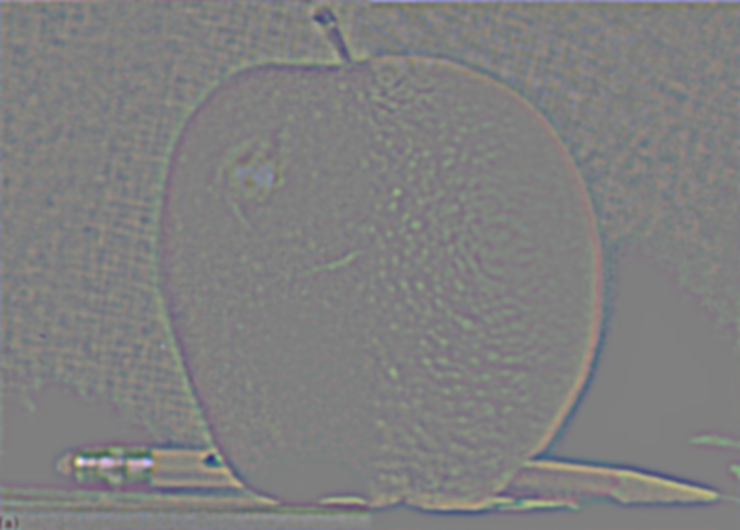

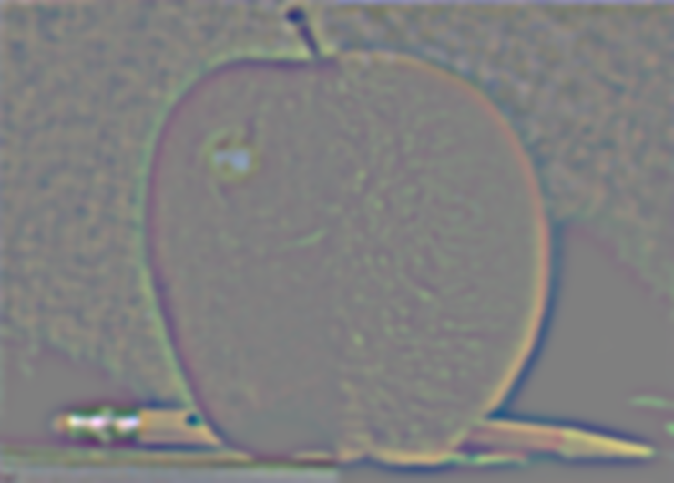

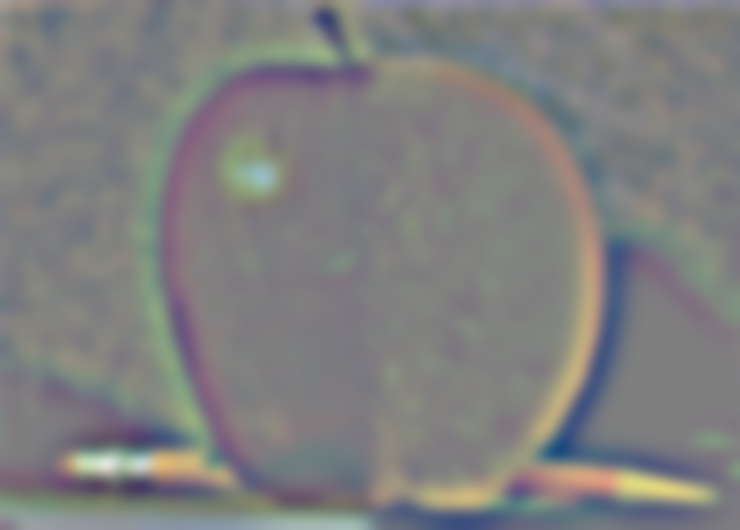

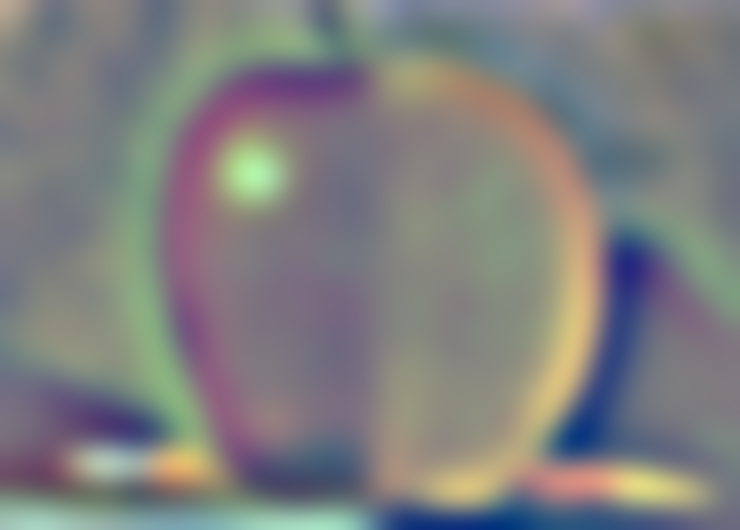

The final oraple is also decomposed into its own Gaussian and Laplacian stacks. Those analysis bands are not claimed to equal the mask-weighted bands used to construct it: spatially varying mask multiplication does not generally commute with filtering.
Stack implementation
def gaussian_stack(image, sigmas=IMAGE_SIGMAS):
"""Successively blur without resizing; sigmas are nominal cumulative scales.
Incremental sigma = sqrt(target**2 - previous**2), following Gaussian
variance addition. Finite sampled kernels approximate this scale schedule.
"""
current = np.asarray(image, dtype=np.float64)
sigmas = np.asarray(sigmas, dtype=np.float64)
if current.ndim not in (2, 3) or not current.size or not np.isfinite(current).all():
raise ValueError('Expected a nonempty finite grayscale or RGB image.')
if current.ndim == 3 and current.shape[2] != 3:
raise ValueError('Color images require three RGB channels.')
if sigmas.ndim != 1 or len(sigmas) < 2 or not np.isfinite(sigmas).all() or sigmas[0] < 0 or (np.diff(sigmas) <= 0).any():
raise ValueError('At least two nonnegative, strictly increasing scales are required.')
levels = []
previous = 0.
for target in sigmas:
incremental = float(np.sqrt(target ** 2 - previous ** 2))
if incremental > 0:
radius = int(np.ceil(4 * incremental))
weights = cv2.getGaussianKernel(2 * radius + 1, incremental, cv2.CV_64F).ravel()
current = convolve1d(convolve1d(current, weights, axis=0, mode='reflect'), weights, axis=1, mode='reflect')
else:
current = current.copy()
levels.append(current)
previous = target
return np.stack(levels)
def laplacian_stack(gaussian):
"""Adjacent Gaussian differences, with the final coarse residual retained."""
gaussian = np.asarray(gaussian, dtype=np.float64)
if gaussian.ndim not in (3, 4) or len(gaussian) < 2 or not np.isfinite(gaussian).all():
raise ValueError('Expected a finite full-resolution Gaussian stack.')
return np.concatenate((gaussian[:-1] - gaussian[1:], gaussian[-1:]), axis=0)
02 / A different transition width at each scale


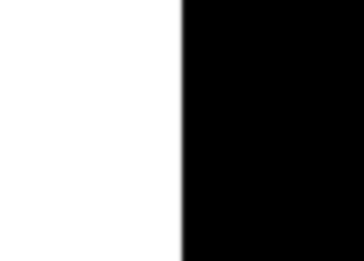


The binary region mask is one on the left and zero on the right. Its Gaussian stack uses nominal σ = 1, 2, 4, 8, 16, 32. The finest mask is deliberately smoothed by σ = 1 instead of making a hard cut even in the finest band. Coarser bands use wider transitions. Weights are restricted to [0, 1] only to remove floating-point roundoff; the orange weight is computed as exactly one minus the apple weight.
Ai = MiLapple,i
Bi = (1 − Mi)Lorange,i
Ci = Ai + Bi · Oraple = Σ Ci
The same scalar spatial weights are applied independently to all RGB channels. The contribution weights already form a weighted average, so I do not divide the combined bands by two again. Since these are full-resolution stacks, reconstruction is direct addition; the expansion step used for subsampled pyramids is unnecessary.
Mask-weighted reconstruction
def blend_stacks(left_laplacian, right_laplacian, masks):
left_laplacian = np.asarray(left_laplacian, dtype=np.float64)
right_laplacian = np.asarray(right_laplacian, dtype=np.float64)
masks = np.asarray(masks, dtype=np.float64)
if left_laplacian.ndim not in (3, 4) or left_laplacian.shape != right_laplacian.shape:
raise ValueError('Both Laplacian stacks must have the same shape.')
if masks.shape != left_laplacian.shape[:3] or not np.isfinite(masks).all():
raise ValueError('One finite 2D mask is required per stack level.')
if not np.isfinite(left_laplacian).all() or not np.isfinite(right_laplacian).all():
raise ValueError('Image stacks must be finite.')
if masks.min() < -1e-12 or masks.max() > 1 + 1e-12:
raise ValueError('Mask weights must lie in [0,1].')
# Clamp only floating-point roundoff in mask weights, never image bands.
masks = np.clip(masks, 0., 1.)
weights = masks[..., None] if left_laplacian.ndim == 4 else masks
left_bands = weights * left_laplacian
right_bands = (1 - weights) * right_laplacian
bands = left_bands + right_bands
return {'left_bands': left_bands, 'right_bands': right_bands, 'bands': bands,
'left': left_bands.sum(axis=0), 'right': right_bands.sum(axis=0), 'image': bands.sum(axis=0)}
03 / Figure 3.42, (a) through (l)
This is a stack-based reproduction of the structure of the assignment's Figure 3.42, not a pixel-identical reproduction of the textbook's subsampled pyramid. Rows one through three show levels 0, 2 and 4. Columns are the masked apple, masked orange and their sum. The bottom row sums all six raw levels, including the coarse residual, to show each source's total contribution and the final image.

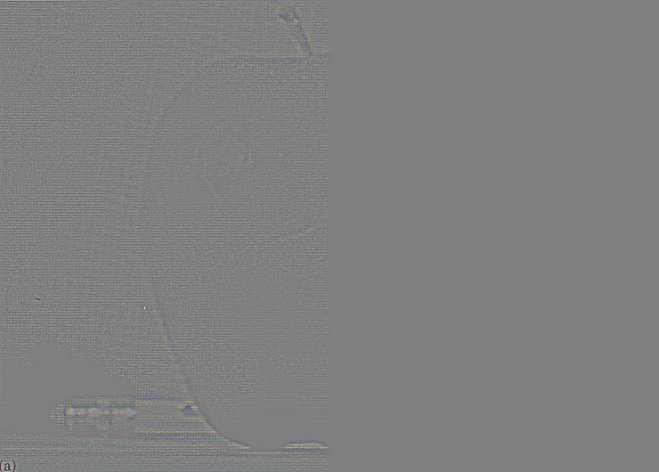

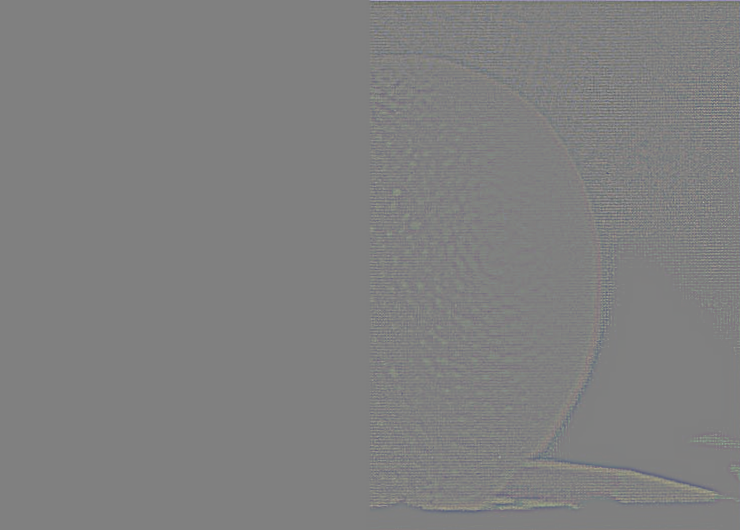

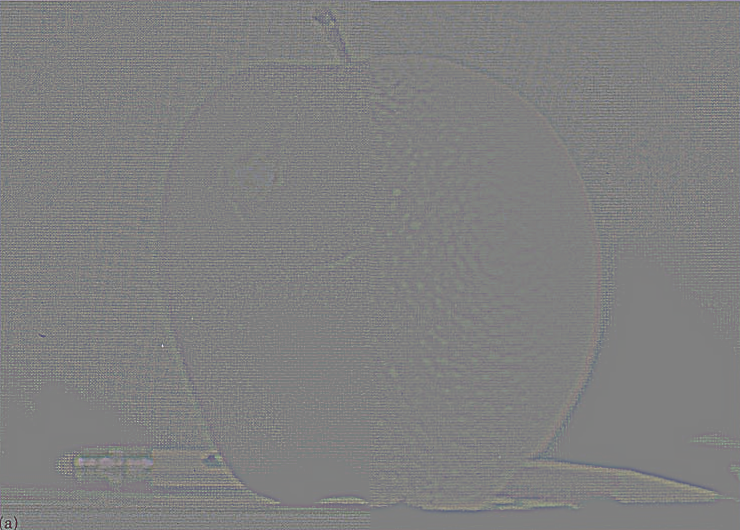

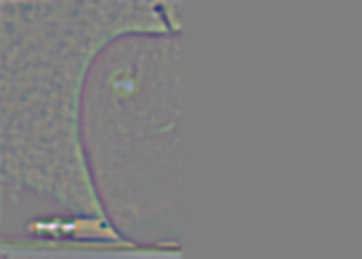

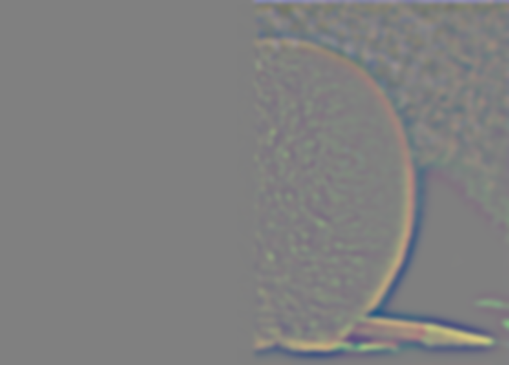

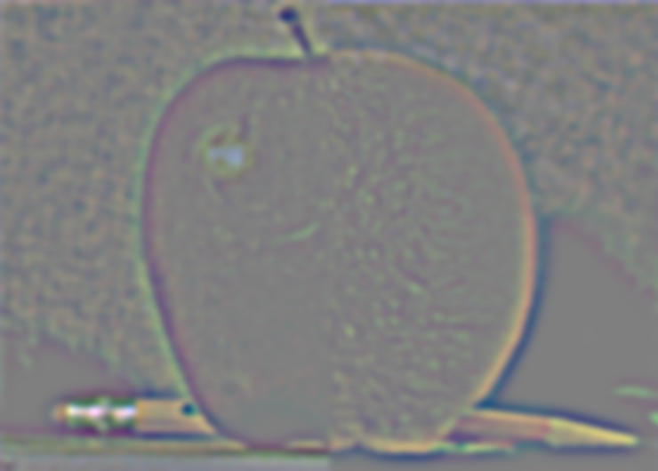

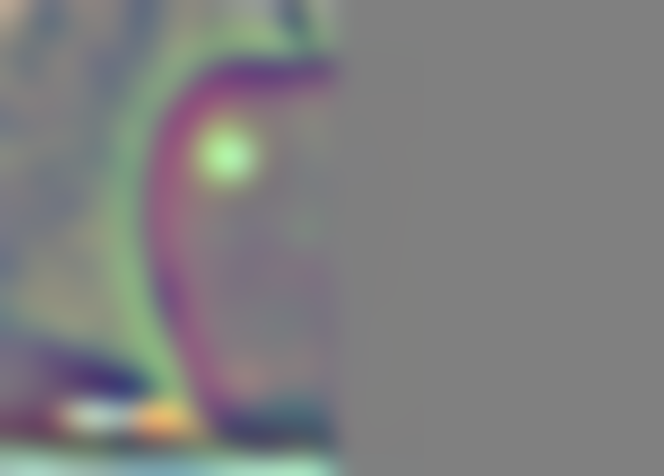


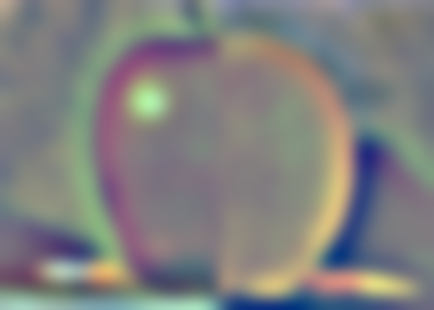

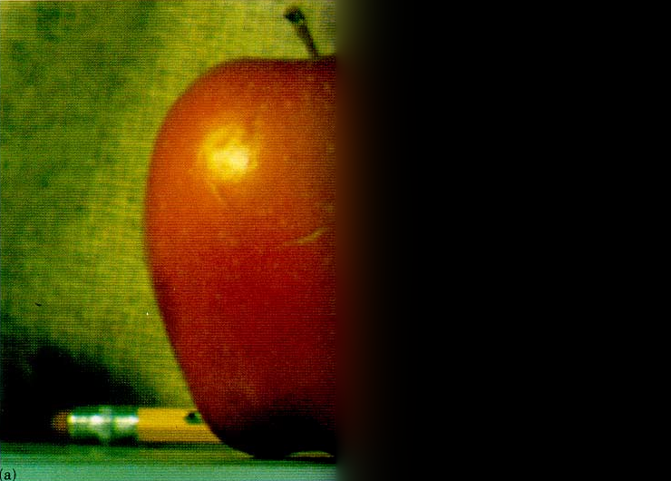

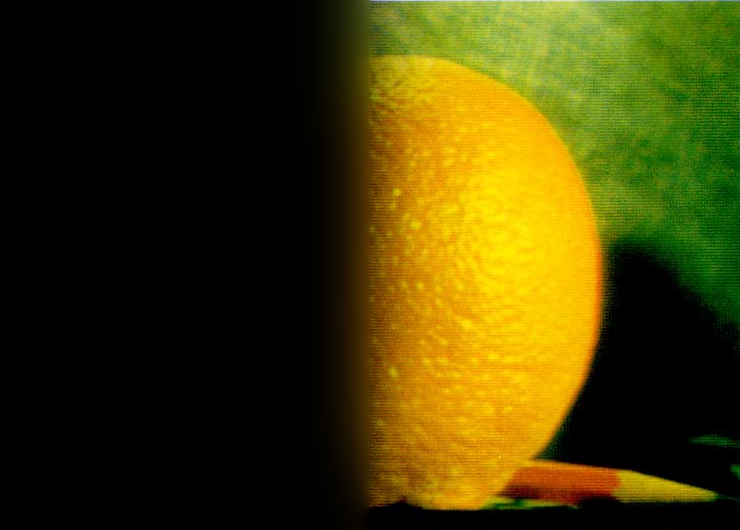

Within each of the first three rows, all three panels share one signed display scale, computed from that row's maximum absolute coefficient. A masked-out region therefore appears middle gray in band images, not black. The bottom row uses ordinary RGB display. Summation happens before any clipping or display normalization. Open the complete twelve-panel figure.

What changes at the seam?


The finest Laplacian band emphasizes the source grain and small edge changes. Intermediate bands describe fruit outlines and local texture at wider scales, while the coarser bands carry broad shading and color differences. The Gaussian levels become progressively smoother but never become smaller. The hard join has a clear vertical color and background discontinuity. A single feather softens that boundary but blends fine texture from both sources over the same transition width. The multiresolution result uses a narrower transition for detail and a wider transition for coarse appearance, making the color change more gradual while keeping recognizable apple and orange texture. It is not perfectly seamless: the fruit tops, surface colors and backgrounds differ, and a change near the stem/center remains visible. The supplied scanned images also contain grain and a small existing panel label; these source characteristics have not been retouched. This is a stack-based demonstration of frequency-dependent blending rather than a claim of pixel-identical textbook reproduction.
04 / Reconstruction checks
| Check | Maximum absolute error |
|---|---|
| Apple reconstruction | 2.220e-16 |
| Orange reconstruction | 2.220e-16 |
| Final oraple reconstruction | 2.220e-16 |
| Left + right contribution | 2.220e-16 |
| Complementary mask sum minus one | 0.000e+00 |
The Gaussian and Laplacian image stacks each have shape (6, 530, 740, 3). The mask stack has shape (6, 530, 740). Reconstructed apple, orange and oraple match their inputs to floating-point precision. The left and right source contributions also sum to the complete blend.
Raw combined RGB values range from -0.068060 to 1.000000000000868. Mask-weighted frequency bands can produce values outside [0, 1], even when input photographs are in range. 3.17% of scalar RGB samples fall outside that interval before display, including tiny upper-bound rounding deviations. All such values are retained in raw arrays; only final PNG display clips them.
Eight real-array unit tests cover unchanged level dimensions, odd-size RGB reconstruction, constant-image residuals, progressive impulse smoothing, all-zero/all-one masks, identical-image invariance, signed bands and invalid scales/weights. The full experiment additionally checks source reconstruction and left-plus-right reconstruction on the supplied images.
Sources and reproduction
Inputs are the course-provided Burt apple and orange images, retained unchanged. Method reference: Peter J. Burt and Edward H. Adelson, A Multiresolution Spline With Application to Image Mosaics, ACM Transactions on Graphics 2(4), 217–236, 1983; the region-mask construction is described on printed page 230 of the supplied paper. The twelve-panel layout follows Figure 3.42 reproduced in the assignment handout.
Stack algorithms · Experiment source · Unit tests · Parameters and errors · Raw float64 arrays (445 MB; optional download) · Input source record
The webpage loads only display images. The optional raw archive is large because it preserves full-resolution RGB Gaussian/Laplacian stacks, masks and weighted bands for numerical inspection.
What I learned
The stack's signed bands separate fine detail from broad appearance while retaining exact additive reconstruction. A useful multiresolution blend needs both the final coarse residual and a mask whose transition width changes with frequency. Correct reconstruction guarantees consistent arithmetic, but does not guarantee perfect geometric alignment or an invisible seam.
Python 3.14.3 · NumPy 2.4.2 · SciPy 1.17.0 · OpenCV 4.13.0 · Pillow 12.1.0